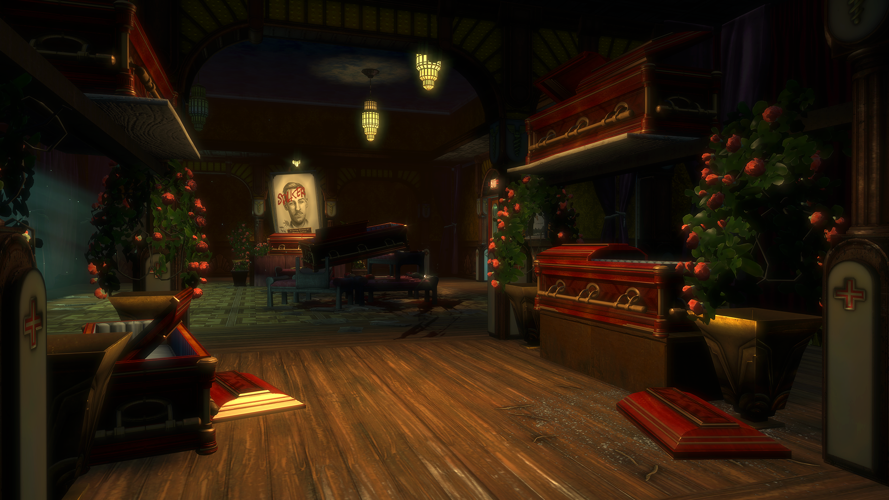
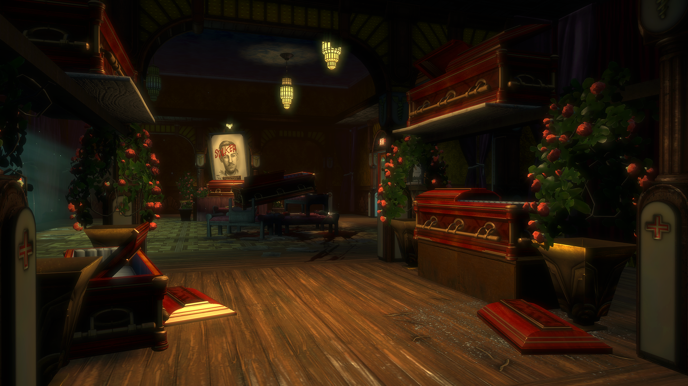

Olympus Heights was an area which, similar to Apollo Square, contained a central tram route to connect the residential districts to the rest of the city. The district housed some of the most well-established apartments buildings in all of Rapture, Mercury Suites and Athena's Glory. Mercury Suites contained the most luxurious and expensive apartments in Rapture, belonging to only the most successful workers and residents, including Brigid Tenenbaum, Sander Cohen and even the infamous Frank Fontaine. There also existed a number of businesses in the district which catered exclusively to the upper class. The bistro at the center of the district offered fine food and expensive drinks to the wealthy as they passed through the tram lines on their way to or from work. The Adonis Luxury Resort, located within the area, also provided a relaxing getaway and offered a number of spa treatments and recreational facilities. During the war, life in Olympus Heights became dangerous as the entire area became a literal war zone. Rebels from Apollo Square gained access to Olympus Heights thanks to the tram tunnels, and the district was continuously under the threat of attack. Even with increased security measures, curfews, and police barricades, almost all of the businesses in the district were left in ruins and the trams ceased functioning. As the war dragged into 1960, the violence slowed, but the damage had already been done.